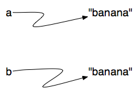

Listas¶
Uma lista (list) em Python é uma sequência ou coleção ordenada de valores. Cada valor na lista é identificado por um índice. O valores que formam uma lista são chamados elementos ou itens. Listas são similares a strings, que são uma sequência de caracteres, no entanto, diferentemente de strings, os itens de uma lista podem ser de tipos diferentes.
Valores em uma lista¶
Existem várias maneiras de se criar uma nova lista.
A maneira mais simples é envolver os elementos da lista por colchetes
( [ e ]).
[10, 20, 30, 40]
["spam", "bungee", "swallow"]
O primeiro exemplo é uma lista de quatro inteiros. O segundo é uma lista de três strings. Como dissemos anteriormente, os elementos de uma lista não precisam ser do mesmo tipo. A lista a seguir contém um string, um float, um inteiro e uma outra lista.
["oi", 2.0, 5, [10, 20]]
Um lista em uma outra lista é dita aninhada (nested) e a lista
mais interna é chamada frequentemente de sublista (sublist).
Finalemente, existe uma lista especial que não contém elemento
algum. Ela é chamada de lista vazia e é denotada por [].
Como você esperaria, podemos também atribuir listas a variáveis e termos listas como parâmetro de funções.
(chp09_01)
Teste seu entendimento
9.1.1: Uma lista só pode conter números inteiros?
Comprimento de uma lista¶
Da mesma forma que occore com strings, a função len retorna o
comprimento de uma lista (o número de elementos na lista).
Entretanto, como listas podem conter itens que são listas, é
importante notar que len somente retorna o comprimento da lista
mais externa. Em outras palavras, sublistas de uma lista são
consideradas como sendo um elemento simples quando contamos o
comprimento da lista.
(chp09_01a)
Teste seu entendimento
9.2.1: O que é impresso pelo trecho de código a seguir?
uma_lista = [3, 67, "gato", 3.14, False] print(len(uma_lista))
9.2.2: O que é impresso pelo trecho de código a seguir?
uma_lista = [3, 67, "gato", [56, 57, "cachorro"], [ ], 3.14, False] print(len(uma_lista))
Acessando os elementos¶
A sintaxe para acessar um elemento de uma lista é a mesma usada para
acessar um caractere de um string. Nós usamos o operador de indexação
( [] – não confundir com a lista vazia). A expressão dentro dos
conchetes especifica o índice. Lembrar que o índice do primeiro
elemento é 0. Qualquer expressão que tenha como resultado um número
inteiro pode ser usada como índice e como com strings, índices
negativos indicarão elementos da direita para a esquerda ao invés de
da esquerda para a direita.
(chp09_02)
Teste seu entendimento
9.3.1: O que é impresso pelo trecho de código a seguir?
uma_lista = [3, 67, "gato", [56, 57, "cachorro"], [ ], 3.14, False] print(uma_lista[5])
9.3.2: O que é impresso pelo trecho de código a seguir?
uma_lista = [3, 67, "gato", [56, 57, "cachorro"], [ ], 3.14, False] print(uma_lista[2].upper())
9.3.3: O que é impresso pelo trecho de código a seguir?
uma_lista = [3, 67, "gato", [56, 57, "cachorro"], [ ], 3.14, False] print(uma_lista[2][0])
Pertinência em uma Lista¶
in e not in são operadores booleanos ou lógicos que testam a pertinência
(membership) em uma sequência. Já usamos esses operadores com
strings e eles também funcionam aqui.
(chp09_4)
Teste seu entendimento
9.4.1: O que é impresso pelo trecho de código a seguir?
uma_lista = [3, 67, "gato", [56, 57, "cachorro"], [ ], 3.14, False] print(3.14 in uma_lista)
9.4.2: O que é impresso pelo trecho de código a seguir?
uma_lista = [3, 67, "gato", [56, 57, "cachorro"], [ ], 3.14, False] print(57 in uma_lista)
Concatenação e repetição¶
Novamente, como com strings, o operador + concatena listas.
Analogamente, o operador * repete os itens em uma lista
um dado número de vezes.
(chp09_5)
É importante perceber que esses operadores criam novas listas a partir dos elementos da lista dada. Se você concatena uma lista com 2 itens com uma lista com 4 itens, você obterá uma nova lista com 6 itens (não uma lista com duas sublistas). Similarmente, repetição de uma lista de 2 itens 4 vezes resultará em uma lista com 8 itens.
Uma maneira de fazermos isto mais claro é executar uma parte desses
exemplos no codelens. A medida que cada passo do código é executado,
você verá as variáveis sendo criadas e as listas as quais elas se referem.
Preste atenção particularmente ao rótulo (tag) id que é mostrado
depois do descritor do tipo de dado (list (id = 12))). Em Python o
id corresponde a um único identificador para aquele objeto
particular. Você pode dizer se são objetos diferentes através da
comparação dos seus ids.
(chp09_concatid)
O comando nova_lista = frutas + num_lista cria uma nova lista de
objetos com o contéudo da lista frutas seguido pelo conteúdo da lista
num_lista. Podemos ver que está é uma lista nova olhando os ids.
O id da nova_lista não e o mesmo que o das outras. É extremamente
importante que você saiba quando está criando uma nova lista ou apenas
alterando uma lista existente. Novamente, os ids podem ajudar nessa
tarefa.
Python possui uma função nativa (build-in) que recebe um objeto
como argumento e retorna o seu id. A função é comvenientemente chamada
de id e tem um único parâmetro, o objeto que você está interessado
em descobrir o id. Você pode ver no examplo abaixo que o id real é
usualmente um número inteiro muito grande (correspondente a um endereço
na memória).
>>> uma_lista = [4,5,6]
>>> id(uma_lista)
4300840544
>>>
Teste seu entendimento
9.5.1: O que é impresso pelo trecho de código a seguir?
uma_lista = [1, 3, 5] outra_lista = [2, 4, 6] print(uma_lista + outra_lista)
9.5.2: O que é impresso pelo trecho de código a seguir?
uma_lista = [1, 3, 5] print(uma_lista * 3)
Fatias de listas¶
A operação de fatiar (slice) que vimos com strings também pode ser aplicada sobre listas. Lembre que o primeiro índice indica o ponto do início da fatia e o segundo índice é um depois do final da fatia (o elemento com esse índice não faz parte da fatia).
(chp09_6)
Teste seu entendimento
9.6.1: O que é impresso pelo trecho de código a seguir?
uma_lista = [3, 67, "gato", [56, 57, "cachorro"], [ ], 3.14, False] print(uma_lista[4:])
Listas são mutáveis¶
Diferentemente de strings, listas são mutáveis (mutable). Isto significa que podemos alterar um item em uma lista acessando-o diretamente como parte do comando de atribuição. Usando o operador e indexação (colchetes) à esquerda de um comando de atribuição, podemos atualizar um dos itens de uma lista.
(ch09_7)
Uma atribuição a um elemento de uma lista é chamada de atribuição a um item (item assignment). Atribuição a itens não funciona com strings. Lembre-se que strings são imutáveis.
Aqui está o mesmo exemplo com o codelens para que você possa executar comando após comando e veja as mudanças na lista de elementos.
(item_assign)
Combinando uma atribuição com o operador de fatiamento podemos atualizar vários elementos de uma só vez.
(ch09_8)
Também podemosremover elementos de uma lista atribuindo a lista vazia a eles.
(ch09_9)
Podemos inserir elementos em uma lista espremendo-os em uma fatia vazia na posição desejada.
(ch09_10)
Teste seu entendimento
9.7.1: O que é impresso pelo trecho de código a seguir?
uma_lista = [4, 2, 8, 6, 5] uma_lista[2] = True print(uma_lista)
Remoção em listas¶
Usando fatiamento para remover elementos de uma lista pode ser complicado,
e portanto propagador de erros. Python oferece uma maneira alternativa
que é mais legível. O comando del remove um elemento de uma lista
usando a sua posição.
(ch09_11)
Como você pode esperar, del também manipula índices negativos e
produz um erro de execução se o índice estiver foram do intervalo da
lista. Além disso, você pode usar uma fatia como argumento para del.
Como é usual, fatias selecionam todos os elementos até, mas não
incluindo, o segundo índice.
Objetos e referências¶
Se executamos as seguintes atribuições,
a = "banana"
b = "banana"
sabemos que a e b farão referência ao string
"banana". Entretanto,
ainda não sabemos se eles se referem ao mesmo string.
Existem duas possibilidades para o Python interpretar internamente essas atribuições:
ou

Em uma das interpretações a e b se referem a dois strings ou objetos
diferentes que têm o mesmo valor. Na segunda interpretação, eles se
referem ao mesmo objeto. Lembre-se que um objeto é uma valor ao qual uma
variável pode se referir ou apontar.
Já sabemos que objetos podem ser identificados usando seus
identificadores que são únicos. Podemos também testar se dois nomes se
referem ao mesmo objeto usando o operador is. O operador is
retorna True se as duas referências são ao mesmo objeto. Em outras
palavras, as referências são a mesma. Teste esse conceito com os
exemplos acima.
(chp09_is1)
A resposta é True. Isto nos diz que ambos a e b se referem
ao mesmo objeto, e que o segundo dos diagramas de referências descreve a
relação. Como strings são imutáveis (immutable), Python optimiza
recursos fazendo dois que se referem ao mesmo string se referirem ao
mesmo objeto.
Este não é o caso com listas.
Considere o exemplo seguir. Aqui a e
b se referem a duas listas diferentes, cada uma por acaso tem os
mesmo elementos como valores.
(chp09_is2)
O diagrama de referências para este exemplo se parece com o seguinte.

a e b tem o mesmo valor mas não se referem ao mesmo objeto.
Existe ainda um outro ponto importante a ser notado a respeito
desse diagrama de referências. O valor a é uma referência a uma
coleção de referências (collection of references). Essas
referências na realidade se referem a valores inteiros em uma lista. Em
outras palavras, um lista é uma coleção de referências para objetos.
É interessante que apesar de a e b serem duas listas distintas
(duas coleções de diferentes de referências), o objeto inteiro 81 é
compartilhado por ambos. Como strings, inteiros são também imutáveis
portanto Python optimiza e permite que todos compartilhem o mesmo objeto.
Aqui esta o exemplo no codelens. Preste atenção particularmente nos valores dos id.
(chp09_istrace)
Apelidos (Aliasing)¶
Como variáveis fazem referência a objetos, se atribuimos uma variável a outra, ambas as variáveis passam a fazer referência ao mesmo objeto.
(listalias1)
Nesse caso, o diagrama de referências se parece com:

Como a mesma lista tem dois nomes diferentes, a e b, dizemos
que a lista tem apelidos (aliased).
Mudanças feitas com um apelido afeta o outro.
No exemplo do codelens a seguir, os ids de a e b são os mesmos
depois da execução do comando de atribuição b = a.
(chp09_is3)
Apesar desse comportamento ser útil, ele é algumas vezes inesperado ou indesejável. Em geral, é mais seguro evitar apelidos (aliasing) quando você está trabalhando com objetos mutáveis. É evidente que com objetos imutáveis não há problema. Por isto, Python é livre para usar apelidos (alias) de strings e inteiros quando surge uma oportunidade para economizar espaço.
Teste seu entendimento
9.10.1: O que é impresso pelo trecho de código a seguir?
lista_a = [4, 2, 8, 6, 5] lista_b = lista_a lista_b[3] = 999 print(lista_a)
Clonando listas¶
Se desejamos modificar uma lista e também manter uma cópia da lista original, temos que ser capazes de fazer uma cópia da lista, não apenas da referência. Este processo é algumas vezes chamado de clonar (cloning), para evitar a ambiguidade da palavra cópia.
A maneira mais fácil de clonarmos uma lista é usar o operador de fatiação.
Tomar qualquer fatia de a cria uma nova lista.
Para clonar uma lista basta tomarmos a fatia como sendo a lista toda.
(chp09_is4)
Agora estamos livres para modicar b sem nos preocuparmos com a.
Note também que o id de b é diferente do id de a. Ela é uma lista
completamente diferente.
Repetições e referências¶
Já vimos que o operador de repetição trabalho sobre strings e também sobre listas. Por exemplo.
(repref1)
Como uma lista, o operador de repetição cria cópias das referências. Apesar desse comportamento parecer simples, quando permitimos que uma lista ter referências a uma outra lista, podemos nos confrontar com alguns problemas sutis.
Considere a seguinte extensão do exemplo anterior.
(repref2)
lista_nova é uma lista com três referências para a lista_original
que foram criadas pelo operador de repetição.

Agora, o que acontece se modificamos um valor da lista_original?
(repref3)
lista_nova mostra a mudança em três lugares. Isto pode ser
facilmente entendido através do diagrama de referências, já que existe
apenas uma lista_original. Logo, qualquer alteração na
lista_original aparece em cada uma das três referências da
nova_lista.

Aqui está o mesmo exemplo no codelens.
Execute o código passo a passo e preste particular atenção
à execução do comando de atribuição lista_original[1] = 99.
(reprefstep)
Teste seu entendimento
9.12.1: O que é impresso pelo trecho de código a seguir?
lista_a = [4, 2, 8, 6, 5] lista_b = lista_a * 2 lista_b[3] = 999 print(lista_a)
9.12.2: O que é impresso pelo trecho de código a seguir?
lista_a = [4, 2, 8, 6, 5] lista_b = [lista_a] * 2 lista_a[3] = 999 print(lista_b)
Métodos de listas¶
O operador ponto também pode ser usado para acessar métodos nativos
(built-in) de objetos que são listas. append é um método de listas
que insere o argumento passado para ele no final da lista.
O exemplo a seguir mostra vários outros métodos.
Alguns deles são muito fáceis de serem compreendidos.
(chp09_meth1)
Existem duas maneiras de usar o método pop .
A primeira, sem parâmetros, remove e retorna o último item da lista.
Se for dado um argumento para a posição, pop remove e
retorna o item da posição. De qualquer maneira a lista é alterada.
A tabela a seguir mostra um resumo dos métodos de listas mostrados acima. Faça testes com esses métodos para ganhar uma melhor compreensão do que eles fazem.
| Método | Parâmetros | Resultado | Descrição |
|---|---|---|---|
| append | item | mutador | Acrescenta um novo item no final da lista |
| insert | posição, item | mutador | Insere um novo item na posição dada |
| pop | nenhum | híbrido | Remove e returno o último item |
| pop | posição | híbrido | Remove e retorna o item da posição. |
| sort | nenhum | mutador | Ordena a lista |
| reverse | nenhum | mutador | Ordena a lista em ordem reversa |
| index | item | retorna idx | Retorna a posição da primeira ocorrência do item |
| count | item | retorna ct | Retorna o número de ocorrências do item |
| remove | item | mutador | Remove a primeira ocorrência do item |
Detalhes desses e de outros métodos podem ser vistos em Python Documentation.
É importante notar que append, sort, e reverse retornam None.
Isto significa que atribuira a minha_lista o resultado da
ordenação de minha_lista resultará na perda da lista.
(chp09_meth2)
Teste seu entendimento
9.13.1:
9.13.2: O que é impresso pelo trecho de código a seguir?
uma_lista = [4, 2, 8, 6, 5] uma_lista.insert(2,True) uma_lista.insert(0,False) print(uma_lista)
9.13.3:
9.13.4:
Scratch Editor
Retorno a sistemas-L¶
Retornemos aos sistemas-L que foram introduzidos na capítulo anterior e trataremos de uma característica interessante que usa listas.
Suponha que temos a seguinte gramática:
X
X --> F[-X]+X
F --> FF
Este sistema-L é muito similar ao sistema-L já visto exceto que
adicionamos uma mudança. Acrescentamos os caracteres ‘[‘ e ‘]’. O
significado desses caracteres inclui uma nova dimensão bastante
interessante ao nosso sistema-L. O caractere ‘[‘ indica que desejamos
salvar o estado na nossa tartaruga, a saber a sua posição e sua
sentido de tal maneira que possamos voltar a esta posição mais tarde.
O ‘]’ diz a tartaruga para voltar para a última posição salva. A
maneira que utilizaremos para realizar essas tarefas será através do
uso de listas. Podemos salvar a sentido e posição de uma tartaruga
como uma lista de 3 elementos [sentido, x, y] . A primeira
posição da lista armazena a sentido, a segunda armazena a coordenada x
e a terceira a coordenada y.
Agora, se criarmos uma lista vazia e cada vez que virmos um ‘[‘
usarmos a função append para inserir no seu final
a lista contendo [sentido, x, y] teremos um históricos das
posições em que a tartaruga esteve.
A última posição salva estará sempre no final da lista.
Quando encontrarmos um ‘]’ no string, usamos a função pop
para remover a última informação inserida na lista.
Modifiquemos nossa função drawLsystem para iniciarmos a
implementação do comportamento descrito.
(list_lsys1)
Quando executamos este exemplo vemos que a figura não é muito interessante, mas note que é exibido e como salvamos a informação sobre as tartarugas e acrescentada e removida do final da lista. No próximo exemplo faremos uso da informação da lista para salvar e recuperar as posições da tartaruga e o seu sentido quando necessário. Usaremos um exemplo mais longo para que você tenha uma ideia de que tipo de desenho podemos obter através de um sistema-L.
(list_lsys2)
Em vez de usar o string inst fornecido aqui, use o código do
capítulo String, e escreve suas próprias função applyRules para
implementar o sistema-L. Este exemplo usa apenas 6 expansões. Teste
com um número maior de expansões. Você também pode desejar executar
com um exemplo com valores diferentes para o ângulo e a distância.
Scratch Editor
Append versus concatenação¶
O método append acrescenta um novo item no final da lista.
É possível acrescentar um item no final da lista usando o operador
+ de concatenação. Entretanto, precisamos ser cuidadosos.
Considere o exemplo a seguir. A lista original contém 3 inteiros. Nós inserimos a palavra “gato” no final da lista.
(appcon1)
Aqui usamos append que simplesmente modifica a lista.
A fim de concatenar necessitamos usar o comando de atribuição:
lista_orig = [45, 32, 88]
lista_orig = lista_orig + ["gato"]
Note que a palavra “gato” necessita ser colocada em uma lista já que o operador concatenação exige duas listas para fazer o seu trabalho.
(appcon2)
É importante observar que com append, a lista original é
simplemente modificada. É possível ver isto observando o id de
lista_orig. O id é o mesmo antes e depois de executarmos
append.
Por outro lado, com concatenação, você verá que o id da lista original não é o mesmo que o id da resultado depois do comando de atribuição. Execute um passo a passo cuidadoso de ambos os exemplos para notar a diferença. Com a concatenação um nova lista é criada.
Teste seu entendimento
9.15.1: O que é impresso pelo trecho de código a seguir?
uma_lista = [4, 2, 8, 6, 5] uma_lista = uma_lista + 999 print(uma_lista)
Listas e o laço for¶
É possível percorrermos uma lista (list traversal) iterando através de itens ou iterando através de índices.
(chp09_03a)
É quase como leríamos em linguagem natural: para (cada) fruta) em (a lista de) frutas, escreva (o nome da) fruta.
Podemos também usar o índice para acessar os itens iterativamente.
(chp09_03b)
Neste exemplo, em cada iteração do laço, a variável posição
é usada como um índice da lista, imprimindo o posicao-ésimo item.
Note que usamos len como limite superior do intervalo
de tal forma que podemos iterar corretamente independentemente do
número de itens na lista.
Qualquer expressão sequencial pode ser usada em um laço for.
Por exemplo, a função range retornal uma sequência de inteiros.
(chp09_for3)
Este exemplo exibe todos os multiplos de 3 entre 0 e 20.
Como listas são mutáveis, é frequentemente desejável que
modifiquemos os elementos de uma lista a medida que ela é percorrida.
No código a seguir todos os números inteiros entre 1 e 5 são
elevados ao quadrado utilizando iteração por posição.
(chp09_for4)
Para um minuto para refretir sobre range(len(numeros) até que
você entenda como funciona. Estamos interessados aqui sobre ambos
o valor e o índice de uma posição da lista de tal maneira que
atribuir un novo valor à posição.
Scratch Editor
Teste seu entendimento
9.16.1: O que é impresso pelo trecho de código a seguir?
lista = [4, 2, 8, 6, 5] nova_lista = [ ] for item in lista: nova_lista.append(item+5) print(nova_lista)
Listas como parâmetros¶
Funções que recebem listas como argumentos e as alteram durante a execução são chamadas de modificadoras (modifiers) e as mudanças elas realizam são chamadas efeitos colaterais (side effects). Ao passar uma lista como argumento estamos realmente passando para a função uma referência para a lista e não um cópia (clone) da lista. Como listas são mutáveis as alterações feitas nos elementos referenciados pelos parâmetros mudarão a lista que o argumento está referenciando. Por exemplo, a função a seguir recebe uma lista como argumento e multiplica cada elemento da lista por 2:
(chp09_parm1)
O parâmetro lista e a variável (argumento) things são
apelidos para o mesmo objeto.

Como a lista de objetos é compartilhada por duas referências, existe apenas uma cópia. Se a função modifica os elementos da lista parâmetros, o função que fez a chamada também enxerga as alterações, já que as alterações estão ocorrendo no original.
This can be easily seen in codelens. Note that after the call to
double_stuff, the id of the formal parameter uma_lista is the
same as the id of things.
(chp09_parm1_trace)
Função pura¶
Uma função pura (pure function) não produz efeito colateral.
Sua comunicação com a função que a chamou é somente através do
parâmetros, que não são modificados e um valor é retornado.
Aqui está um versão pura da função double_stuff da seção anterior.
Para usar versão pura de double_stuff e modificar things,
devemos atribuir o valor retornado a things :
(ch09_mod2)
Mais uma vez, codelens nos ajuda a ver as referências e os objetos passados como parâmetros e retornados.
(ch09_mod3)
Scratch Editor
Qual é melhor?¶
Tudo que é feito com uma função modificadora pode também ser realizado com uma função pura. De fato, algumas linguagens de programação somente permitem funções puras. Existe alguma evidência que programas que usam funções puras são desenvolvidos mais rapidamente e propagam menos erros que programas que usam funções modificadoras. No entanto, modificadoras são as vezes convenientes e em alguns casos, programas funcionais não menos eficientes.
Em geral, recomendamos que você escreva funções puras sempre que for razoável fazer isso é apele para modificadoras somente se existe uma boa vantagem em fazer isso. Este método pode ser chamado de estilo funcional de programação (functional programming style).
Funções que produzem listas¶
A versão pura da função double_stuff acima faz uso de um padrão
(pattern) que você deve guardar na sua caixa de ferramentas. Sempre
que você necessitar escrever uma função que cria e retorna uma lista,
o padrão usualmente é:
inicialize uma variável para a lista nova com a lista vazia
itere
crie um novo elemento
append esse novo elemento a lista nova
retorne a lista nova
Vejamos outro uso desse padrão.
Suponha que tenhamos uma função primo(x) que recebe um número inteiro x
e retorna True se o valor de x é primo e False em caso contrário.
Agora, escrevemos uma função que recebe um número inteiro n e cria
e retorna uma lista com todos os números primos menores que n:
def primos_ate(n):
""" (int) -> list
Recebe um inteiro n e cria e retorna a lista dos números
primos menores que n.
"""
lista_primos = []
for i in range(2,n):
if primo(i):
lista_primos.append(i);
return lista_primos
List comprehensions¶
No exemplo anterior criamos uma lista de uma sequência de valores (os inteiros
entre 2 e n) baseados em um critério de seleção (ser primo).
Um maneira simples para realizar em Python esse tipo de processamento
é o uso de list comprehension. (N.d.T. também traduzido para o português como abrangência de listas.
Ver o comentário em: List comprehensions ou abrangências de listas.)
List comprehension é uma maneira compacta de criar listas. A forma geral para obter esse efeito é:
[<expressão> for <item> in <sequência> if <condição>]
onde a cláusula if é opcional. Por exemplo,
(list)
A expressão descreve cada elemento da lista que está sendo criada.
A cláusula for itera sobre cada elemento da sequencia.
Os itens são filtrados pela cláusula if se existe alguma.
No exemplo acima, o comando for``faz com que a variável ``item
assuma todos os valores na lista minha_lista.
Cada item é elevado ao quadrado antes de ser inserido na lista que
está sendo construída.
O resultados é a lista dos quadrados dos valores em minha_lista.
Para escrever a função primos_ate usaremos a função primos
como um filtro dos inteiros na sequência resultante de
range. Em outras palavras, para cada inteiro de 2 até n,
exclusive n, se o inteiro é primo, ele será mantido na lista
resultante.
def primes_ate(n):
""" (int) -> list
Recebe um inteiro n e cria e retorna a lista dos números
primos menores que n usando 'list comprehension'.
"""
lista_primos = [num for num in range(2,n) if primo(num)]
return lista_primos
Scratch Editor
Teste seu entendimento
9.20.1: O que é impresso pelo trecho de código a seguir?
uma_lista = [4,2,8,6,5] outra_lista = [num*2 for num in uma_lista if num%2==1] print(outra_lista)
Listas aninhadas¶
Uma lista aninhada (nested list) é uma lista que aparece como um
elemento em uma outra lista. Nessa lista, o elemento com índice 3 é
uma lista aninhada. Se executarmos print(lista[3]), obteremos
[10, 20]. Para acessar um elemento de uma lista aninhada podemos
proceder em dois passos. Primeiro, acessamos a lista aninhada,
depois acessamos o item de interesse. Também é possível combinar
esses passos usando o operador colchetes que são aplicados
da esquerda para a direita.
(chp09_nest)
Teste seu entendimento
9.21.1: O que é impresso pelo trecho de código a seguir?
lista = [ [4, [True, False], 6, 8], [888, 999] ] if lista[0][1][0]: print(lista[1][0]) else: print(lista[1][1])
Strings e listas¶
Dois dos métodos mais úteis que operam sobre strings envolvem listas de
strings. O método split quebra um string em uma lista de palavras.
Por palavra entenda-se um string limitado por um conjunto de
caracteres pré-definidos.
Em caso de omissão (default), qualquer número de caracteres brancos (whitespace characters) é considerado como limite de uma palavra.
(ch09_split1)
Um argumento opcional chamado de delimitador (delimiter) pode ser usado para especificar quais caracteres serão usados como fronteira de palavras. No exemplo a seguir usamos o string “se”
(ch09_split2)
Note que o delimitador não aparece no resultado.
O método join faz o trabalho inverso do método split.
Determinamos um string separador (separator), frequentemente chamado
de cola (glue) e juntamos os elementos na lista utilizando a cola entre
cada par de elemento.
(ch09_join)
A lista que estamos grudando (lista no exemplo) não é modificada.
É possível utilizar qualquer string como cola, inclusive o string vazio.
Scratch Editor
Teste seu entendimento
9.22.1: O que é impresso pelo trecho de código a seguir?
escritora = "Carolina Maria de Jesus" lista_de_nomes = escritora.split() inic = "" for nome in lista_de_nomes: inic = inic + nome[0] print(inic)
Função de conversão list¶
Python possui uma função nativa chamada list que procura converter
o seu argumento para o tipo list.
(ch09_list1)
O string “Crunchy Frog” é transformado em uma lista que contem cada
caractere do string. Em geral, qualquer sequência pode ser convertida em
uma lista usando esta função. O resultado sera a lista contendo os
elementos na sequência original. Não é válido usar a função list sobre
qualquer argumento que não seja uma sequência.
É importante observar que a função de conversão list colocará cada
elemento da sequência original em uma nova lista. Quando estamos trabalhando
com strings isto é muito diferente do resultado do método split.
Enquanto que split quebra uma string em um lista de “palavras”, list
sempre quebra o string em uma lista de caracteres.
Tuplas e mutabilidade¶
Até agora vimos dois tipos de coleções sequenciais de objetos: strings, que são compostos de caracteres; e listas. que são formados por elementos de um qualquer tipo. Uma das diferenças que notados é que os elementos de uma lista podem ser modificados, mas os caracteres de um string não podem. Em outras palavras, strings são imutáveis (immutable) e listas são mutáveis (mutable).
Uma tupla (tuple), como uma lista, é um sequência de items de qualquer tipo. Entretanto, diferentemente de listas, tuples são imutáveis. Sintaticamente, uma tupla é uma sequência de valores separadas por uma vírgula. Apesar de não ser necessário, há a convenção de se envolver uma tupla entre parêntese:
fernanda = ("Fernanda", "Montenegro", 1929, "Central do Brasil", 1998, "Atriz", "Rio de Janeiro, RJ")
Tuplas são úteis para representarmos o que em outras linguagens frequentemente chamamos de registros (records) — alguma informação relacionada, como o seu histórico escolar, Não há descrição do que cada um desses campos (fields) significam, mas podemos ter um palpite. Uma tupla nos permite agruparmos informações relacionadas e usá-la como um único objeto.
Tuplas admitem a mesma sequência de operações que strings e listas. Por exemplo, com o operador de indexação selecionamos um elemento de uma tupla.
Como strings, se tentarmos utilizar o operador de atribuição para modificarmos um elemento da tupla, obteremos um erro.
fernanda[0] = 'X'
TypeError: 'tuple' object does not support item assignment
É claro que, mesmo que não seja possível modificarmos os elementos de uma tupla,
nós podemos fazer com que uma variável faça referência a uma nova tupla que
armazena indormações diferentes. Para construirmos uma nova tupla é conveniente
que utilizemos fatiamento para selecionar as partes da tupla original e juntemos
com outras informações a fim de obtermos uma nova tupla. Assim,
fernanda tem um filme mais recente e nós podemos desejar alterar a sua
tupla. Podemos facilmente usar fatiar as partes da tupla original que
desejamos concatenar a fim de obtermos uma nova tupla.
(ch09_tuple1)
Para criar uma tupla com um único elemento (mas você provavelmente
não fará isso frequentemente), podemos incluir no final uma vírgula,
já que sem a vírgula no final, Python tratará (5) abaixo como um número inteiro
entre parenteses:
(chp09_tuple2)
Atribuição de tuplas¶
Python tem um mecanismo muito poderoso de atribuição de tuplas (tuple assignment)
que permite uma tupla de variáveis na esquerda receber valore de uma tupla
de variáveis a direita do operador = de atribuição.
(nome, sobrenome, ano_de_nascimento, filme, ano_do_filme, profissao, local_de_nascimento) = fernanda
Isso é equivalente a sete comandos de atribuição, tudo em um linha e de maneira simples. Um requisito é que o número de variáveis a esquerda deve ser o mesmo que o número de valores na tupla.
Frequentemente, é útil trocarmos os valores de duas variáveis.
Com o comando de atribuição convencional necessitamos de uma variável temporária.
Por exemplo, para trocar os valores de a e b:
temp = a
a = b
b = temp
Atribuição entre tuplas faz o mesmo serviço de uma maneira muito elegante:
(a, b) = (b, a)
Naturalmente, o número de variáveis a esquerda e o número de valores a direita devem ser o mesmo.
>>> (a, b, c, d) = (1, 2, 3)
ValueError: need more than 3 values to unpack
Tuplas como valor de retorno¶
Funções podem retornar tuplas como valor de retorno. Isto é muito conveniente — frequentemente desejamos saber qual foi o maior número de gols marcados e o maior número de gols sofridos por um time, ou desejamos o média e desvio padrão de um conjunto de dados, ou sejamos saber um dia, mês e ano ou se estamos fazendo alguma modelagem ecológica desejamos saber o número de coelho e lobos em uma ilha em um certo momento. Em cada um desses casos, uma função (que só pode retornar um único valor), pode cria uma tupla formada por vários valores.
Por exemplo, podemos escrever uma função que retorna a área de um círculo e comprimento de uma circunferência de um dado raio.
(chp09_tuple3)
Scratch Editor
Glossário¶
- apelidos (aliases)
- Várias variáveis fazendo referência a um mesmo objeto.
- clonar (clone)
- Criar um novo objeto com os mesmo valores de um objeto existente. Copiar uma referência de um objeto cria um apelido mas não cria um clone do objeto.
- delimitador (delimiter)
- Um caractere ou string usado para indicar onde um string deve ser “quebrado”.
- efeito colateral (side effect)
- Um mudança no estado de um programa feito por uma função que foi invocada que não é o resultado do valor retornado pela função. Efeitos colaterais só podem ser produzidos por função midificadoras.
- elemento
- Um dos valores em uma lista (ou outra sequência). O operador colchetes seleciona elementos de uma lista.
- função pura (pure functon)
- Uma função que não produz efeitos colaterais. Funções puras apenas alteram os estado (variáveis) das funções que a chamam através de valores de retorno.
- índice (index)
- Uma variável, valor ou expressão do tipo
intque indica um elemento de uma lista, string ou tupla. - lista (list)
- Uma coleção de objetos, onde cada objeto é identificado por um índice.
Como outros tipos
str,int,float, etc. existe também a funçãolistque procura converter o seu argumento para uma lista. - lista aninhada (nested list)
- Uma lista que é um elemento de uma outra lista.
- modificadora (modifier)
- Uma função que altera os seus argumntos. Somente argumentos de tipos mutáveis podem ser alterados por funções modificadoras.
- objeto (object)
- Um valor a que uma variável pode se referir.
- percorrer um lista (list traversal)
- Acesso sequencial a cada elemneto em uma lista.
- padrão (pattern)
- Uma sequência de comandos ou um estilo de escrever código que é potencialmente aplicável em várias situações. Parte de se tornar um cientista da computação madura está em aprender e estabelecer padrões e algoritmos que formam a sua caixa de ferramentas. Padrões frequentemente correspondem ao seu “mental chunking”.
- sequência (sequence)
- Qualquer tipo de dados que consiste de uma coleção ordenada de elementos, com cada elemento identificado por um índice.
- tipo de dado mutável (mutable data type)
- Um tipo de dado em que seu elementos podem ser modificados. Todos os tipos mutáveis são compostos por outros tipos. Listas são mutáveis; strings e tuplas não são mutáveis.
Exercícios¶
Desenhe um diagrama de referências para
aebantes e depois de ser executada a terceira linha do seguinte trecho de código:a = [1, 2, 3] b = a[:] b[0] = 5
Cria uma lista chamada
minha_listacom os seguinte items: 76, 92.3, “oi”, True, 4, 76.
Escreva comandos para:
- Inserir “pera” e 76 no final da lista.
- Inserir o valor “gato” na posição de índice 3.
- Inserir o valor 99 no início da lista.
- Encontrar o índice de “oi”.
- Contar o número de ocorrências de 76 na lista.
- Remover a primeira ocorrência de 76 da lista.
- Remover True True da lista usando
popeindex.
Crie uma lista contendo 100 números inteiros aleatórios entre 0 e 1000 (usando iteração, ´´append´´ e o módulo random). Escreva uma função
mediaque recebe uma lista de números como parâmetros e retorna a média dos valores na lista.
Escreva uma função que recebe a lista de inteiros do exercício anterior e retorna o maior valor na lista. (Observação: existe uma a função nativa
maxque faz o serviço, mas você não deve usá-la.)
Escreva uma função
soma_de_quadrados(xs)que recebe uma lista de números xs e retorna a soma dos quadrados dos números na lista. Por exemplosoma_dos_quadrados([2, 3, 4])deve retorna 4+9+16 que é 29.
Escreva uma função que recebe uma lista de números inteiros e retorna a quantida de números ímpares na lista.
Escreva uma função que recebe uma lista de números inteiros e retorna a soma dos números pares na lista.
Escreva uma função que recebe uma lista de números e retorna a soma dos números negativos na lista.
Escreva uma função que recebe uma lista de palavras (strings) e retorna o número de palavras na lista que tem comprimento 5.
Escreva uma função que recebe uma lista de números inteiros e retorna a soma dos números na lista exclusive o primeiro número par.
Escreva uma função que recebe uma lista de palavras (strings) e retorna o número de palavras que ocorre na lista até e inclusive a primeira ocorrência da palavra “sam”.
Apesar de Python nós fornecer uma grande lista de métodos nativos é uma boa prática e instrutivo pensar sobre como elas podem ser implementadas. Implemente uma função que se comporte como:
- count
- in
- reverse
- index
- insert
Escreva uma função
troca(s, velho, novo)que recebe os stringss,velhoenovoe troca emstodas as ocorrências develhopornovo:test(troca('Mississippi', 'i', 'I'), 'MIssIssIppI') s = 'I love spom! Spom is my favorite food. Spom, spom, spom, yum!' test(troca(s, 'om', 'am'), 'I love spam! Spam is my favorite food. Spam, spam, spam, yum!') test(troca(s, 'o', 'a'), 'I lave spam! Spam is my favarite faad. Spam, spam, spam, yum!')
Dica: use os métodos
splitejoin.
Aqui estão as regras para um sistema-L que cria algo que lembra um jardim comum de evas. Implemente as regras a seguir e teste-as. Use o ângulo de 25.7 graus.:
H H --> HFX[+H][-H] X --> X[-FFF][+FFF]FX
Aqui está outro sistema-L. Use o ângulo de 25 graus:
F F --> F[-F]F[+F]F